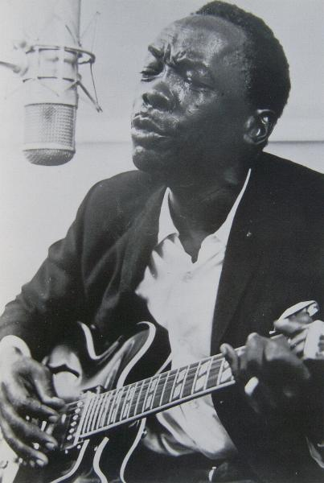

| Michael Ochs Archives | ||
| Back 20/28 |
 | Next 22/28 |
John Lee Hooker. The Detroit-based bluesman is one of the true originals of the form; his sly, shuffling boogie style (Dimples, Boom Boom, Boogie Chillun) inspired a rash of imitators and disciples among the British "blues boom" acts of the '60s. |